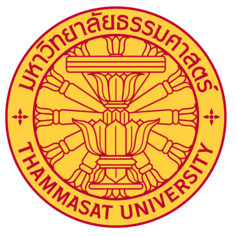

Thammasat Universit

Thammasat University, established in 1934 in Bangkok, is one of Thailand’s oldest and most prestigious universities, renowned for its leadership in social sciences, law, and political studies. With a strong commitment to academic excellence, civic engagement, and social responsibility, the university offers a wide range of programs in law, economics, political science, social sciences, and humanities. Thammasat University is dedicated to producing graduates who are knowledgeable, socially conscious, and capable of contributing to national development, democratic governance, and global collaboration.